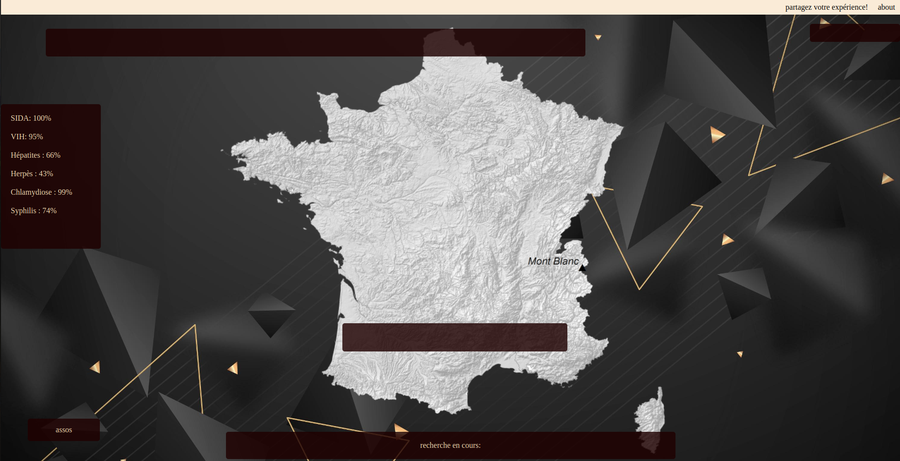

Nuit de l'informatique 2022
 Ayant participé à la nuit de l’informatique 2022, j’ai pu travailler sur un site web JavaScript dans une équipe de 8 membres lors de la nuit du 1er décembre. L’objectif de cette année était de réaliser un site de prévention contre le SIDA tout en intégrant les défis que l’on avait sélectionné.
Idée
Suite à plusieurs heures de réflexion, nous nous sommes mis d’accord sur le concept du projet. Notre projet allait être une application web où le joueur devra empêcher la propagation de MST en gérant le budget, la sensibilisation au sein de la population et la technologie. Une des inspirations principales était PlagueInc qui est un jeu centré sur les pandémies.
Mon premier projet JavaScript
Ce fut mon premier site réalisé en JavaScript, n’ayant eu aucun cours au préalable, moi et mon équipe avons dû apprendre au fur et à mesure ce langage et comment faire des objets ou faire le lien avec la page html. Malgré beaucoup d'effort, le site ne fut pas fonctionnel au final, mais cela nous a donné un aperçu sur le développement d’un site JavaScript.